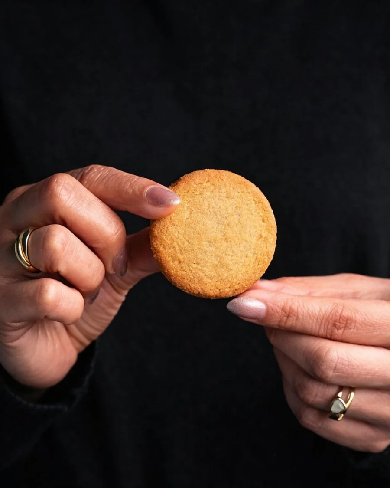
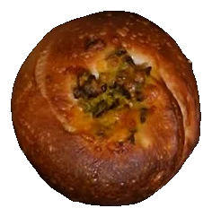
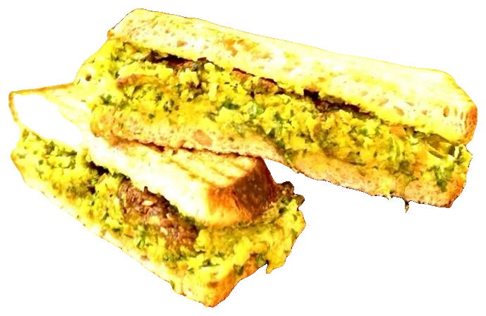
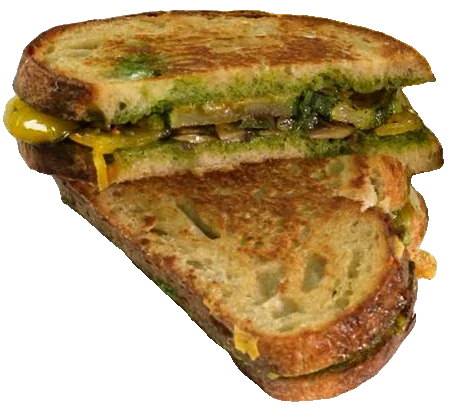
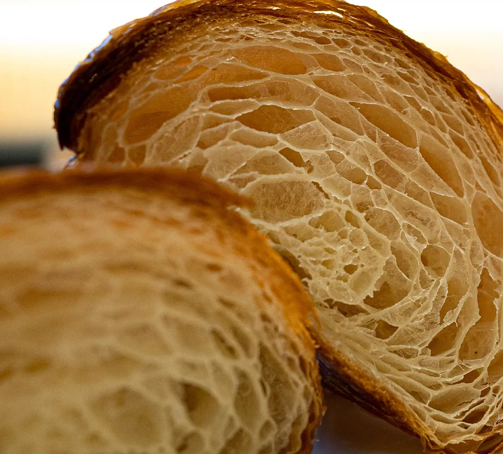
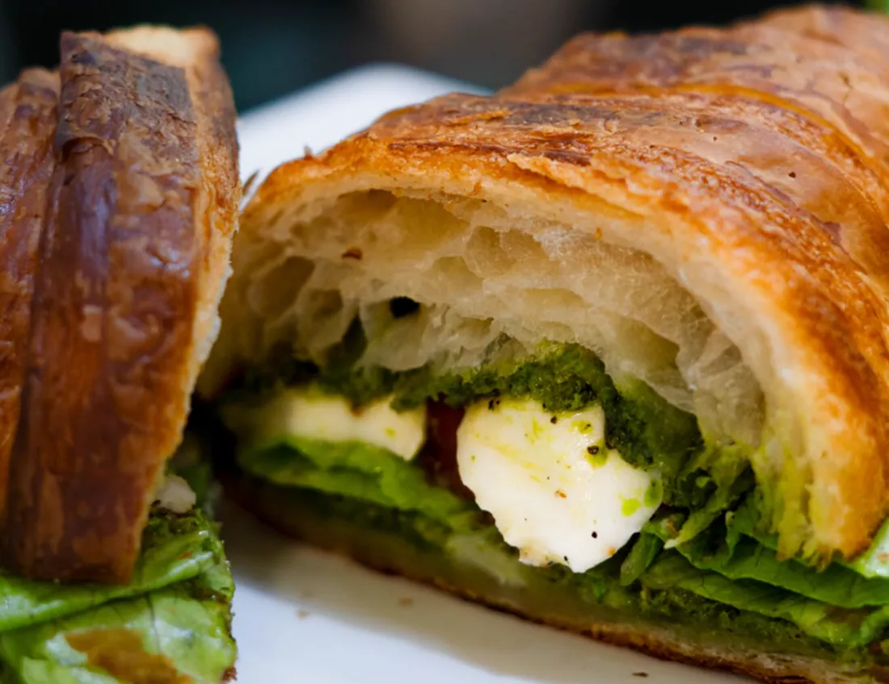

100% eggless
Bakery
An entire kitchen without egg in it, so nobody has to ask.

The whole bakery and the whole savoury menu, entirely eggless. Not a substitution, not a separate shelf, not something you have to ask about first. Just how we bake.
On the counter
Every one of these is eggless






Laminated, baked and filled here.
None of it with egg.
Why it is the default
Plenty of people at any table in Punjab do not eat egg. The usual answer is one token item at the end of the counter. We did the opposite and took egg out of the whole kitchen, so nobody has to negotiate their order.
What that covers
- BakesThe entire cabinet, every day
- SavouryThe full savoury menu, not a corner of it
- CakesIncluding anything made to order
Ask the counter for the day's bakes. They change.
